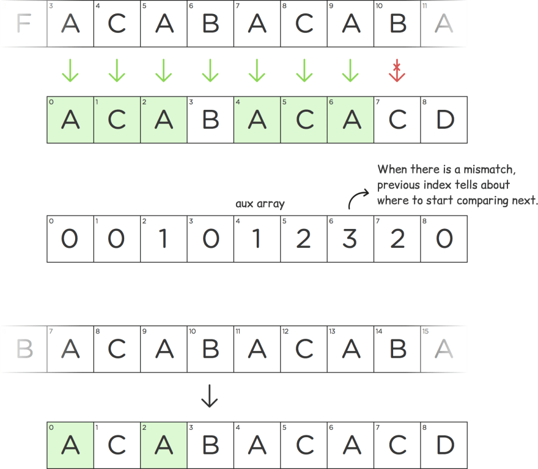

Strings Algorithms
In computer science, a sorting algorithm is an algorithm that puts elements of a list into an order. The most frequently used orders are numerical order and lexicographical order, and either ascending or descending. Efficient sorting is important for optimizing the efficiency of other algorithms (such as search and merge algorithms) that require input data to be in sorted lists. Sorting is also often useful for canonicalizing data and for producing human-readable output.
Bubble Sort, Insertion Sort, Selection Sort | O(n2)
func bubble_sort(_ arr: inout [Int]) {
for _ in 0...arr.count-2 {
for j in 0...arr.count-2 {
if arr[j] > arr[j+1] {
arr.swapAt(j,j+1)
}
}
}
}
func insertion_sort(_ arr: inout [Int]) {
for i in 1...arr.count-1 {
let temp = arr[i]
var hole = i
while hole > 0 && arr[hole-1] > temp {
arr[hole] = arr[hole-1]
hole -= 1
}
arr[hole] = temp
}
}
func selection_sort(_ arr: inout [Int]) {
for i in 0...arr.count-2 {
var mIndex = i
for j in i+1...arr.count-1 {
if arr[j] < arr[mIndex] {
mIndex = j
}
}
arr.swapAt(i,mIndex)
}
}Quick Sort | O(nlog2n)

Quicksort is a divide-and-conquer algorithm. It works by selecting a 'pivot' element from the array and partitioning the other elements into two sub-arrays, according to whether they are less than or greater than the pivot. For this reason, it is sometimes called partition-exchange sort. The sub-arrays are then sorted recursively. This can be done in-place, requiring small additional amounts of memory to perform the sorting.
func quick_sort(_ arr: inout [Int], _ start: Int,_ end: Int) {
if start > end {
return
}
let pivotIndex = partition(&arr, start, end)
quick_sort(&arr, start, pivotIndex-1)
quick_sort(&arr, pivotIndex+1, end)
func partition(_ arr: inout [Int],_ start: Int, _ end: Int) -> Int {
var pivotIndex = start
let pivot = arr[end]
for i in start..<end {
if arr[i] <= pivot {
arr.swapAt(i, pivotIndex)
pivotIndex += 1
}
}
arr.swapAt(pivotIndex, end)
return pivotIndex
}
}Merge Sort | O(nlog2n)

In computer science, merge sort (also commonly spelled as mergesort) is an efficient, general-purpose, and comparison-based sorting algorithm. Most implementations produce a stable sort, which means that the order of equal elements is the same in the input and output.
func merge_sort(_ arr: [Int]) -> [Int] {
var arr = arr
if arr.count <= 1 {
return arr
}
let mid = arr.count / 2
let left = merge_sort( [Int](arr[0..<mid]) )
let right = merge_sort( [Int](arr[mid..<arr.count]) )
merge(&arr, left, right)
func merge(_ ans: inout [Int], _ left:[Int],_ right:[Int]) {
var k = 0, a = 0, b = 0
while a < left.count && b < right.count {
if left[a] <= right[b] {
ans[k] = left[a]
a += 1
} else if right[b] < left[a] {
ans[k] = right[b]
b += 1
}
k += 1
}
while a < left.count {
ans[k] = left[a]
a += 1
k += 1
}
while b < right.count {
ans[k] = right[b]
b += 1
k += 1
}
}
return arr
}